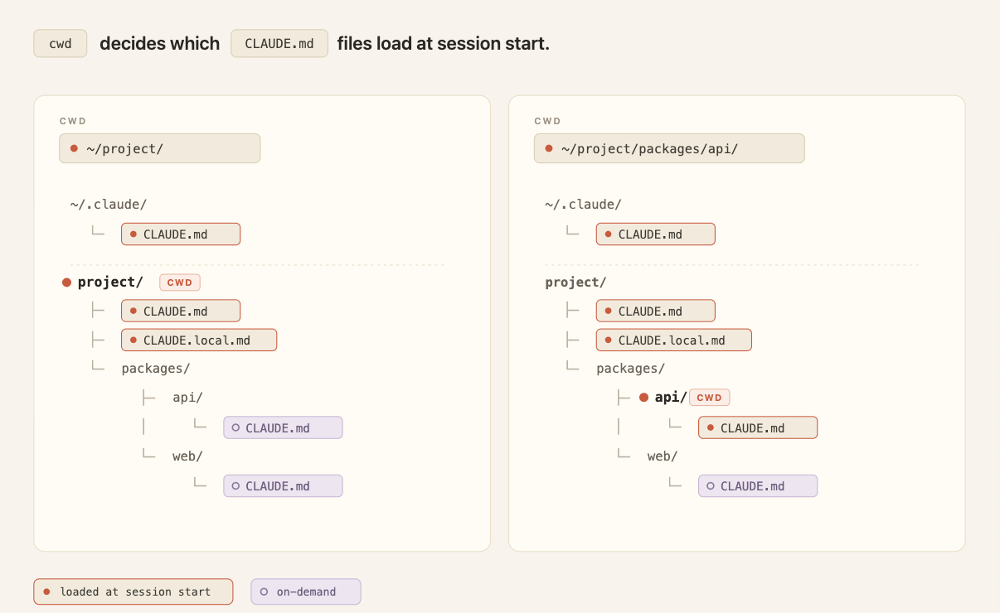
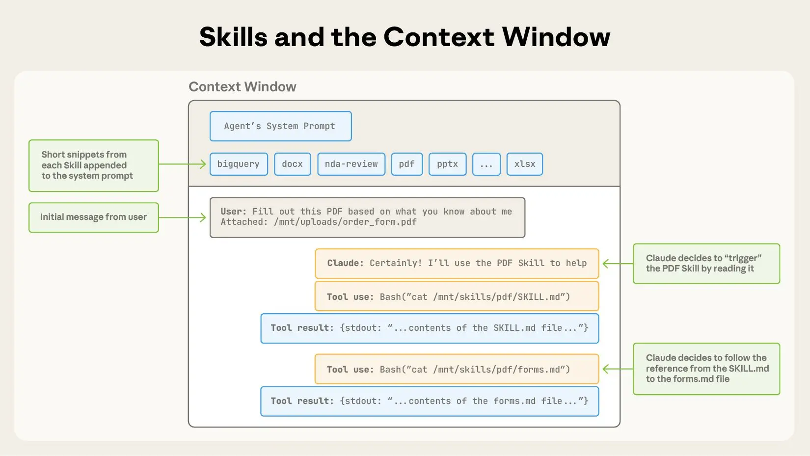
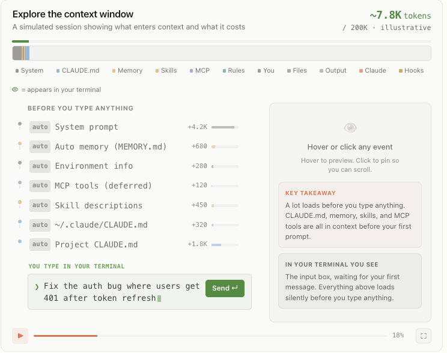
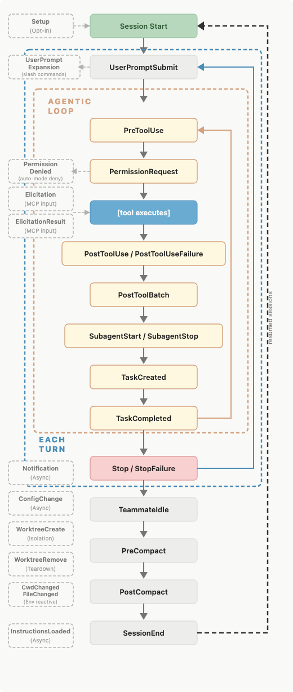

总结
Claude Code 有七种方式指示 Claude 的行为。每种机制控制三件事：什么时候加载、是否在长会话中保留、拥有多高的权威。
- 七种机制：CLAUDE.md、rules、skills、subagents、hooks、output styles、append system prompt。
- 选择的核心是权衡：上下文成本 vs 权威级别。
- 常驻事实放 CLAUDE.md；硬约束放 rules；流程放 skills；隔离任务放 subagents；确定性动作放 hooks。
- “每次 X 就做 Y”不该写 CLAUDE.md，应该用 hook。
- “绝对不能发生”不该靠 prompt，应该用 hooks + permissions。
- 30 行流程不该塞 CLAUDE.md，应该放 skill。
原文逐段对照翻译
翻译说明：以下按原文顺序逐段翻译，保留全部机制、表格和使用建议；中文以自然、准确为目标。
七种机制总表
Claude Code has seven methods for instructing Claude's behavior: CLAUDE.md files, rules, skills, subagents, hooks, output styles, and appending the system prompt. Each method controls when an instruction loads into context, whether it persists through long sessions, and how much authority it carries.
Claude Code 有七种指示 Claude 行为的方式：CLAUDE.md、rules、skills、subagents、hooks、output styles，以及追加 system prompt。每种机制都控制三件事：指令何时进入上下文、能否在长会话中保留、拥有多高的权威。
The seven methods trade context cost against authority. These methods influence Claude's behavior while two separate dials, which model and effort level you choose, control how capable it is and how hard it works.
这七种机制本质上是在“上下文成本”和“权威级别”之间做权衡。它们影响 Claude 的行为；另外两个旋钮——选哪个模型、用多高的 effort——决定它有多强、多努力。
CLAUDE.md

CLAUDE.md is a markdown file at the root of your project. It loads into context at session start and stays there for the entire session. Build commands, directory layout, monorepo structure, coding conventions, and team norms all fit naturally here.
CLAUDE.md 是项目根目录的 Markdown 文件，会话开始加载，并在整个会话中保留。构建命令、目录布局、monorepo 结构、编码约定、团队规范都适合放这里。
There are two types: always loaded, meaning a root CLAUDE.md in a shared repository and/or saved locally for personal preferences; and on-demand, meaning CLAUDE.md files in subdirectories below the folder where you initialized the session. app/api/CLAUDE.md loads when Claude reads a file under app/api, not at session start.
有两种类型：一种总是加载，即共享仓库的根 CLAUDE.md，和/或本地保存的个人偏好；另一种按需加载，即会话初始化目录下子目录里的 CLAUDE.md。比如 `app/api/CLAUDE.md` 只在 Claude 读到 `app/api` 下文件时加载，而不是会话开始就加载。
In a shared repository, CLAUDE.md grows the way any unowned config file does: every team appends its own instructions and nothing gets deleted. The cost compounds at scale. Every line loads into every session for every engineer working in the repo, whether it's relevant to their task or not.
在共享仓库里，CLAUDE.md 会像任何无主配置文件一样膨胀：每个团队都追加自己的指令，没人删。成本会随规模复利：每一行都会进入每个工程师的每个会话，不管与当前任务是否相关。
Keep CLAUDE.md under 200 lines, give it an owner, and review changes to it like code. The content itself should follow the same rules as any prompt: be explicit, explain the why behind constraints, and show examples. Think of this file as giving Claude an overview of your codebase, or as an index pointing to other files.
把 CLAUDE.md 控制在 200 行以内，给它一个 owner，并像 review 代码一样 review 改动。内容本身也要遵守 prompt 的原则：明确、解释约束背后的原因、给例子。把它当成代码库概览，或指向其他文件的索引。
In monorepos, give each team's directory its own subdirectory CLAUDE.md so teams only load their own conventions, and developers can use the claudeMdExcludes setting to skip files from teams whose code they never touch. For standards that must apply to every repository, a centrally managed CLAUDE.md can be deployed via MDM or config management.
monorepo 里，每个团队目录放自己的子目录 CLAUDE.md，这样只加载自己的约定；开发者可以用 `claudeMdExcludes` 跳过从不接触的团队文件。对于全组织必须遵守的标准，可以用 MDM 或配置管理部署中心化 CLAUDE.md。
Rules
Rules are markdown files in .claude/rules/ that give Claude specific constraints or conventions. Unscoped rules behave like CLAUDE.md: always loaded at session start and re-injected on compaction. Path-scoped rules allow you to load rule instructions only when they are relevant by adding a paths field.
Rules 是 `.claude/rules/` 下的 Markdown，给 Claude 具体约束或约定。无 scope 的 rules 像 CLAUDE.md：会话开始加载，压缩后重新注入。路径级 rules 通过 `paths` 字段，只在相关时加载。
For example, a rule scoped to src/api/** stays out of context during a docs-only session. It would only be loaded whenever Claude reads files within that src/api/ directory. A file-specific constraint, like "migrations are append-only," fits best as a path-scoped rule.
比如 scope 到 `src/api/**` 的 rule，在只改文档的会话里不会进入上下文；只有 Claude 读 `src/api/` 下文件时才加载。像“migration 只能追加”这种文件特定约束，最适合放路径级 rule。
Reach for a path-scoped rule over a nested CLAUDE.md file when the instruction regards a cross-cutting concern or file that appears in multiple but not all corners of the codebase.
如果一条指令涉及跨切面关注点，或出现在代码库多个但不所有角落的文件，优先用路径级 rule，而不是嵌套 CLAUDE.md。
Skills

Skills live in .claude/skills/ as folders of instructions, scripts, and resources that Claude loads dynamically. Each skill has a SKILL.md file with a name, description, and body. Only the name and description load at session start; the full body loads when Claude invokes the skill.
Skills 放在 `.claude/skills/`，每个 skill 是一个包含指令、脚本和资源的文件夹。每个 skill 有 `SKILL.md`，含 name、description、body。会话开始只加载 name 和 description；正文在调用时加载。
For example, /code-review is a built-in skill that reviews your current diff and reports its findings without editing files. The skill defines the playbook so Claude follows the same structured approach every time you invoke it. On compaction, Claude Code re-injects invoked skills up to a total budget; oldest ones drop first.
比如 `/code-review` 是内置 skill：review 当前 diff、报告发现、不改文件。它定义了一套 playbook，所以每次调用都走同一套结构化流程。压缩时，Claude Code 会在总预算内重新注入调用过的 skills，最旧的先丢。
Instructions that are procedural, like deploy workflows, release checklists, or review processes, belong in a skill rather than in CLAUDE.md.
流程性指令——部署工作流、发布检查清单、review 流程——应该放 skill，而不是 CLAUDE.md。
Subagents

Subagents are markdown files in .claude/agents/ that define isolated assistants for specific side tasks. Each file uses YAML frontmatter (name, description, plus optional model and tool access) followed by a body that becomes that subagent's system prompt.
Subagents 是 `.claude/agents/` 下的 Markdown，定义用于特定侧任务的隔离助手。每个文件用 YAML frontmatter（name、description、可选 model/tool access），正文成为该 subagent 的 system prompt。
Subagents are similar to skills in that the name, description, and tool list load at session start, but the larger context within the body doesn't auto-invoke. Claude calls them via the Agent tool, passing in a prompt string. The subagent runs in its own fresh context window, and only the final message returns to your main session.
Subagents 和 skills 类似：name、description、工具列表在会话开始加载，但正文不会自动调用。Claude 通过 Agent 工具传入 prompt 调用它。subagent 在自己的新上下文窗口运行，只有最终消息返回主会话。
This pattern scales: subagents can nest up to five levels deep, and dynamic workflows orchestrate tens to hundreds of background agents. The orchestration plan and intermediate results live in script variables rather than in Claude's context window.
这个模式可以扩展：subagent 最多嵌套 5 层；动态工作流可以编排几十到几百个后台 agent。编排计划和中间结果放在脚本变量里，而不是 Claude 的上下文窗口。
That isolation is one of the main reasons to reach for a subagent instead of a skill. Use a subagent when a side task like deep search, log analysis, or dependency audit would clutter your main conversation. Use a skill when you want the procedure to play out inside the main thread so you can see and steer each step.
隔离是选择 subagent 而不是 skill 的主要原因。深搜、日志分析、依赖审计这类会产生大量中间结果的侧任务，用 subagent；你希望在主线程看到并逐步 steering 的流程，用 skill。
Hooks

Hooks are user-defined commands, HTTP endpoints, or LLM prompts that provide more deterministic control over Claude's behavior by firing on specific events in Claude's lifecycle: file edits, tool calls, or session start. You register hooks in settings.json, managed policy settings, or skill/agent frontmatter.
Hooks 是用户定义的命令、HTTP endpoint 或 LLM prompt，在 Claude 生命周期事件（文件编辑、工具调用、会话开始）触发，提供更确定的控制。注册位置可以是 `settings.json`、managed policy settings，或 skill/agent frontmatter。
Hooks have low context costs because the configuration or instruction lives outside the main context window. The harness runs the handler or makes model calls with separate windows depending on the hook type. Some hooks may have output saved to the main context window, such as a blocking hook's standard error.
Hooks 的上下文成本低，因为配置/指令在主上下文之外；harness 根据 hook 类型运行 handler，或用独立窗口做模型调用。少数 hook 输出会进主上下文，比如 blocking hook 的 stderr。
Use hooks for anything that should happen deterministically: running linters after edits, posting to Slack on completion, or blocking specific commands before they execute. A PreToolUse hook can inspect any tool call and exit code 2 to deny it.
任何必须确定性发生的事都用 hook：编辑后跑 linter、完成后发 Slack、执行前阻止特定命令。PreToolUse hook 可以检查任意工具调用，exit code 2 拒绝执行。
Output styles 与 append system prompt
Output styles are files in .claude/output-styles/ that inject instructions into the system prompt. They never get compacted, load at the start of every session, and are cached after the first request. Because they sit in the system prompt, they carry the highest instruction-following weight of any method we've covered.
Output styles 是 `.claude/output-styles/` 下的文件，把指令注入 system prompt。它们永不压缩，每个会话开始加载，首次请求后缓存。因为位于 system prompt，它们的指令权重最高。
Changes to the output style will replace the default output style unless you set keep-coding-instructions: true. By default, a custom output style drops the instructions that tell Claude it is helping with software engineering, how to scope changes, when to add comments, security concerns, and verification habits.
修改 output style 会替换默认 style，除非设 `keep-coding-instructions: true`。默认情况下，自定义 style 会丢掉“你在做软件工程”的指令，包括如何限定改动、何时加注释、安全注意事项、完成前验证等。
An alternative is the append-system-prompt flag. It is only additive to the original system prompt, doesn't modify Claude's role, and applies only to that invocation. It can have a higher context cost, though prompt caching reduces this after the first request.
替代方案是 `append-system-prompt` flag：只追加，不修改 Claude 的角色，只对那次调用生效。上下文成本可能更高，不过 prompt caching 会在首次请求后降低成本。
Appending the system prompt is best for adding specific coding standards, output formatting, or domain-specific knowledge. Keep in mind that appending has diminishing returns for adherence: the more instructions you provide, the less strictly Claude will follow them.
追加 system prompt 适合加特定编码标准、输出格式、领域知识。注意遵循度会边际递减：指令越多，Claude 执行得越松。
什么时候换一种机制
"Every time X, always do Y" in CLAUDE.md: if the behavior should happen reliably, like running prettier after every edit, use a hook instead. The model choosing to run a formatter is different from the formatter running automatically.
“每次 X 就做 Y”写在 CLAUDE.md：如果行为必须可靠发生，比如每次编辑后跑 prettier，应该用 hook。模型“选择”跑 formatter，和 formatter 自动跑，是两件事。
"Never do this" in CLAUDE.md: when something absolutely must not happen, an instruction is the wrong tool. A real guardrail needs to be deterministic, and the enforcement methods are hooks and permissions. A PreToolUse hook can inspect a call and exit with code 2 to block it.
“绝对不要做这个”写在 CLAUDE.md：如果某事绝对不能发生，指令是错的工具。真正的护栏必须确定性，执行手段是 hooks + permissions。PreToolUse hook 可以检查调用并 exit 2 阻止。
A 30-line procedure in CLAUDE.md: procedures belong in skills. CLAUDE.md is for facts Claude should hold all the time: build commands, monorepo layout, team conventions. A deployment runbook or security review checklist should live in .claude/skills/.
30 行流程写在 CLAUDE.md：流程属于 skills。CLAUDE.md 放 Claude 应一直知道的事实：构建命令、monorepo 布局、团队约定。部署 runbook、安全 review 清单应放 `.claude/skills/`。
An API-specific rule without paths: if a rule only applies to src/api/**, scoping it with paths keeps it out of context during unrelated work. An unscoped rule is mechanically identical to putting the content in CLAUDE.md.
API 特定规则没有 paths：如果规则只适用于 `src/api/**`，用 `paths` scope，避免无关工作时加载。无 scope 的 rule 在机制上等同于写进 CLAUDE.md。
Writing personal preferences to a project-level CLAUDE.md file: all file-based methods have a user-level counterpart loaded for every Claude Code session regardless of repo. Use local files for personal preferences; keep project-level files for team-wide preferences specific to a codebase.
把个人偏好写进项目级 CLAUDE.md：所有文件机制都有用户级对应物，每个 Claude Code 会话都会加载。个人偏好放本地文件；项目级文件放团队共享、只针对该代码库的偏好。
学习者视角
关键收获
- “放哪”比“写什么”更重要。 同一条指令放错表面，要么浪费上下文，要么没有权威。
- 确定性的事不要交给模型。 hook 是代码，不是建议。
- Subagent 的第一价值是隔离。 中间结果不进主上下文。
- CLAUDE.md 是索引，不是百科。 它应该指向更多信息，而不是包含所有信息。
- Output style 是核选项。 它会替换默认软件工程指令，慎用。
放回课程里看
这篇是 Week 4 的配置总纲。读完它，再看 AGENTS.md 和 Writing a Good CLAUDE.md，会更容易理解“为什么不要把所有东西塞进一个文件”。
一个反直觉点
很多人把 CLAUDE.md 当成万能配置。官方建议相反：CLAUDE.md 只放常驻事实；流程放 skills，硬约束放 hooks，隔离任务放 subagents。
拓展
思考题
- 你的配置里，有哪些“每次 X 就 Y”其实应该用 hook？
- 哪些“绝对不要”只靠 prompt，没有确定性护栏？
- 你的 subagent 是否真的隔离了上下文，还是把中间结果又倒回主会话？
- 如果你要改 output style，会保留哪些默认软件工程指令？
练习
审计你的 Claude Code / Codex 配置：
- 列出所有指令；
- 按七种机制分类；
- 标出放错位置的；
- 至少把一条“每次 X 就 Y”改成 hook；
- 把一条 30 行流程移到 skill。